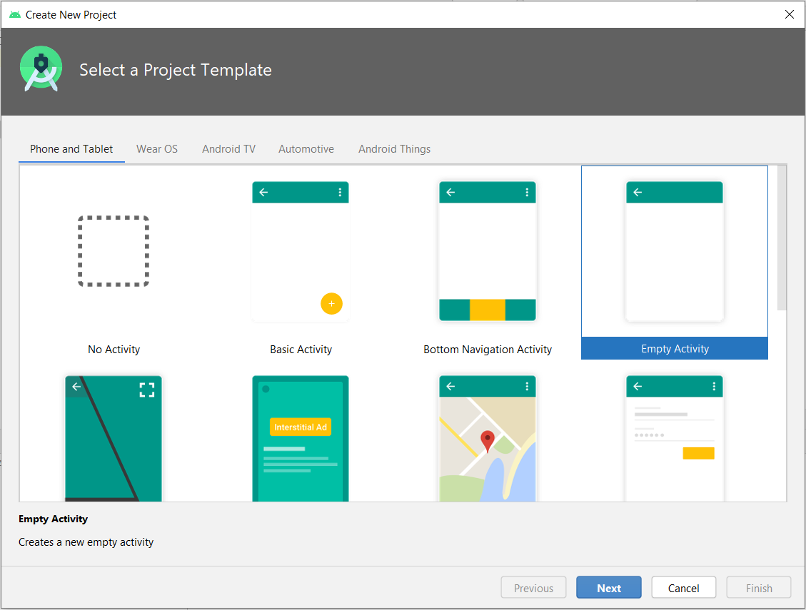
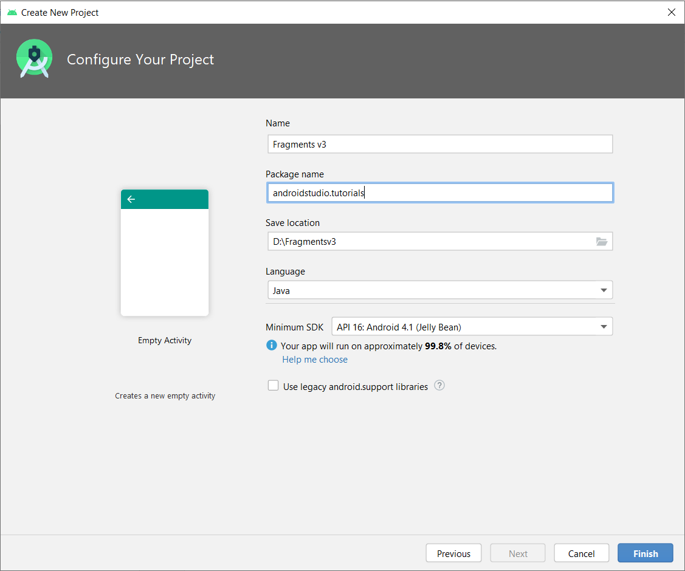
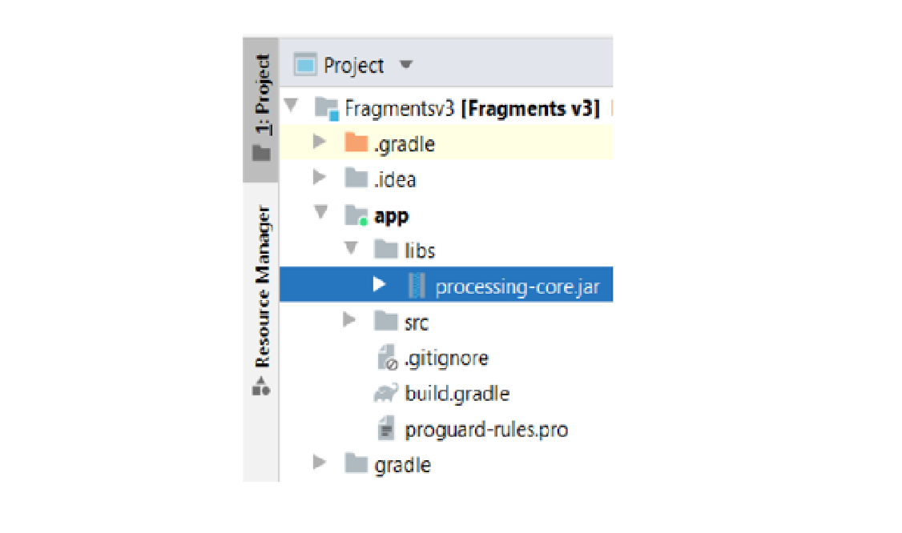
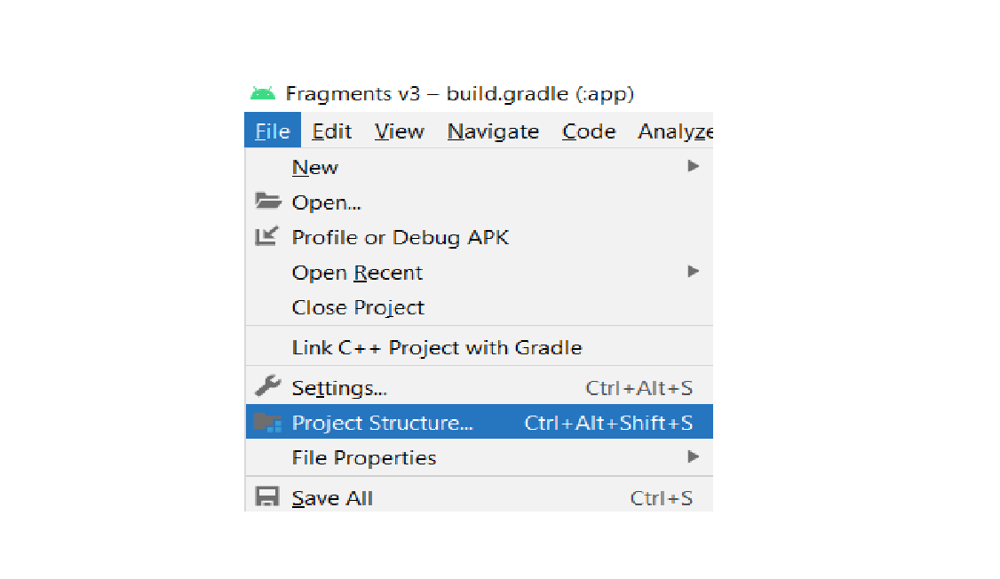
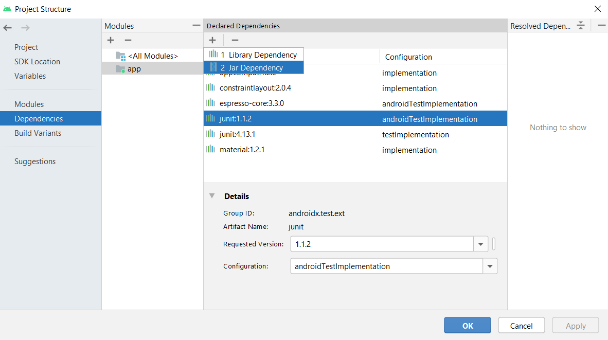
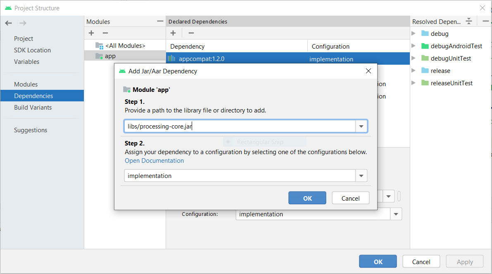
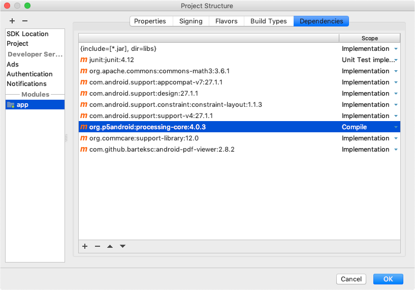

Es posible usar Android Studio para el desarrollo avanzado de Android con la biblioteca principal de Processing.
Android Studio es la herramienta recomendada por Google para desarrollo en Android. Si ya tienes experiencia en con la programación de Android app usando Android Studio, y quisieras incorporar la biblioteca principal de Processing para Android en tus proyectos de Android Studio projects, entonces este tutorial puede serte de utilidad.
Todo el código que define la API de Processing está incluido dentro de archivo processing-core.zip, que está dentro de la subcarpeta AndroidMode en la carpeta de modos dentro de la carpeta de bosquejos. Lo único que tienes que hacer es copiar este archivo como rocessing-core.jar y agregarlo como una dependencia a tu proyecto. El procedimiento paso a paso para hacer esto con Android Studio se detalla a continuación:
1.Cree un proyecto de Android si aún no lo ha creado. Comience seleccionando una actividad vacía:

2.Ingrese el nombre del proyecto, el nombre del paquete y la versión mínima del SDK. Mantenga la opción 'Use legacy android.support libraries' sin marcar, ya que el último núcleo de procesamiento de Android se migra a androidx. Después de eso, haga clic en el botón 'Finish':

3. Copia processing-core.zip (ubicado en la carpeta AndroidMode en Processing) a app/libs, renómbralo como processing-core.jar y agrégalo como una dependencia jar a el proyecto:

4. Para agregarlo como una dependencia de jar, haga clic en Archivo -> Estructura del proyecto. Un cuadro de diálogo aparecerá:

5. Seleccione 'dependencies' en el panel más a la izquierda y luego haga clic en 'app' en el panel de módulos. Haga clic en el botón más bajo Declared Dependencies y luego haga clic en Jar Dependency. Aparecerá otro cuadro de diálogo:

6. En el cuadro de diálogo Agregar jar, ingrese la ruta como 'libs / processing-core.jar' y en el Paso 2, ingrese el alcance como 'implementación'. Haga clic en 'OK', 'Apply' y luego nuevamente en 'OK':

7. Una vez hecho todo lo anterior, escribe el código de tu bosquejo extendiendo la clase PApplet, por ejemplo:
// Sketch.java
package tutorials.androidstudio.fragmentsv4;
import processing.core.PApplet;
public class Sketch extends PApplet {
public void settings() {
size(600, 600);
}
public void setup() { }
public void draw() {
if (mousePressed) {
ellipse(mouseX, mouseY, 50, 50);
}
}
}
8. Inicializa el bosquejo en la actividad principal:
package tutorials.androidstudio.fragmentsv4;
import androidx.appcompat.app.AppCompatActivity;
import android.content.Intent;
import android.os.Bundle;
import android.view.ViewGroup;
import android.widget.FrameLayout;
import processing.android.PFragment;
import processing.android.CompatUtils;
import processing.core.PApplet;
public class MainActivity extends AppCompatActivity {
private PApplet sketch;
@Override
protected void onCreate(Bundle savedInstanceState) {
super.onCreate(savedInstanceState);
FrameLayout frame = new FrameLayout(this);
frame.setId(CompatUtils.getUniqueViewId());
setContentView(frame, new ViewGroup.LayoutParams(ViewGroup.LayoutParams.MATCH_PARENT,
ViewGroup.LayoutParams.MATCH_PARENT));
sketch = new Sketch();
PFragment fragment = new PFragment(sketch);
fragment.setView(frame, this);
}
@Override
public void onRequestPermissionsResult(int requestCode, String permissions[], int[] grantResults) {
if (sketch != null) {
sketch.onRequestPermissionsResult(
requestCode, permissions, grantResults);
}
}
@Override
public void onNewIntent(Intent intent) {
super.onNewIntent(intent);
if (sketch != null) {
sketch.onNewIntent(intent);
}
}
}
9. Finalmente, crea un diseño (layout) mínimo para la actividad principal:
<RelativeLayout xmlns:android="http://schemas.android.com/apk/res/android"
xmlns:tools="http://schemas.android.com/tools"
android:id="@+id/drawer_layout"
android:layout_width="match_parent"
android:layout_height="match_parent"
tools:context="tutorials.androidstudio.fragmentsv4.MainActivity" >
<FrameLayout android:id="@+id/container"
android:layout_width="match_parent"
android:layout_height="match_parent" />
</RelativeLayout>
El proyecto completo de Android Studio está disponible aquí.
La biblioteca principal de Processing también está disponible como un paquete en Bintray. Este paquete se puede importar fácilmente a un proyecto de Gradle usando la siguiente especificación de dependencia:
compile 'org.p5android:processing-core:x.y.z'
donde x.y.z es la versión que quisieras utilizar. En Android Studio, el paquete principal de Processing aparecerá como una dependencia de módulo de la siguiente manera:
